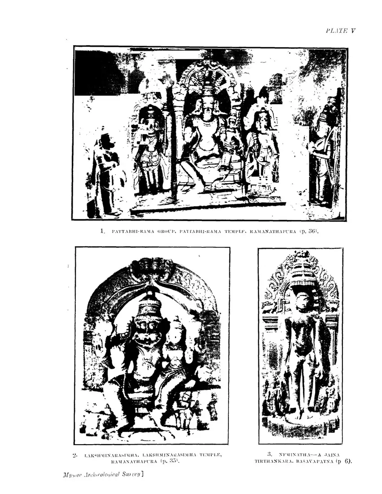
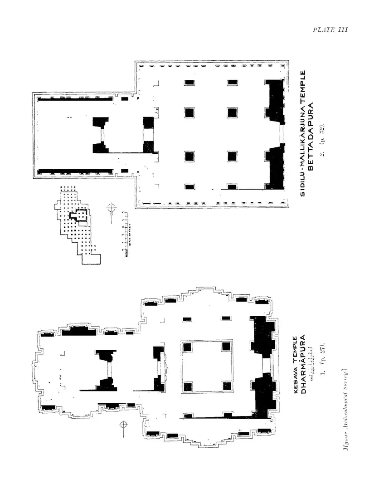
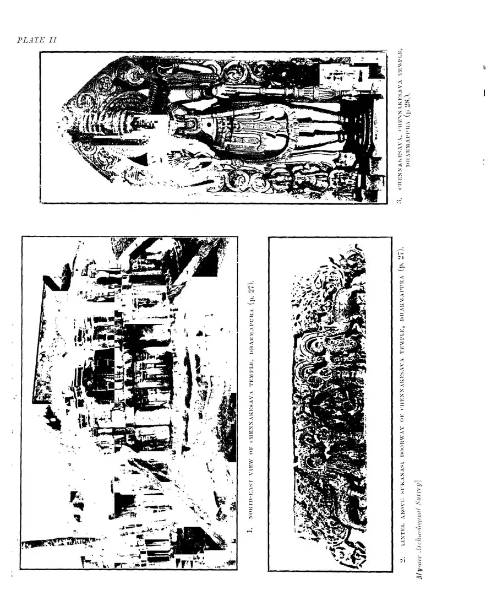
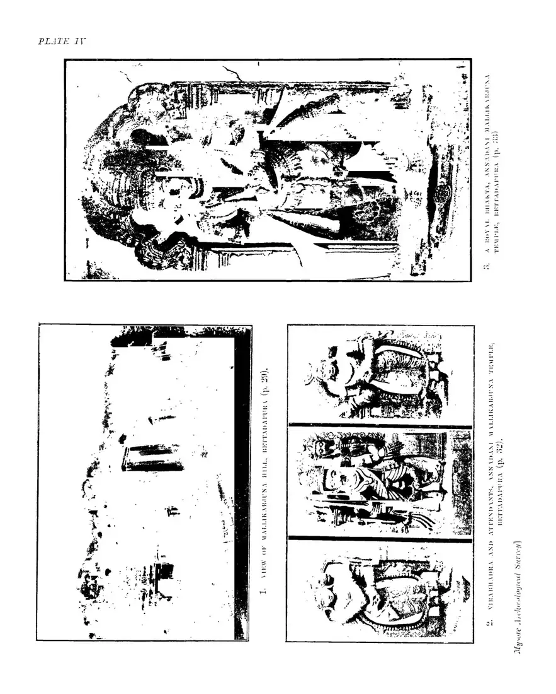
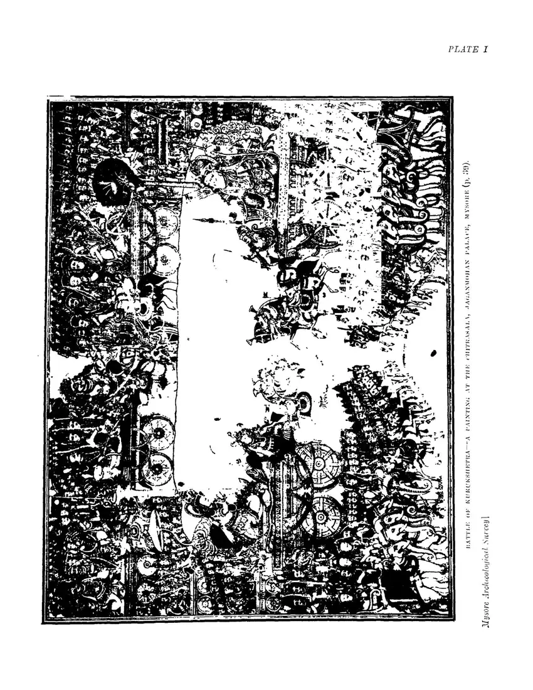

Annual Report of the Mysore Archaeological Department for the year 1943
Reading this page
p. 23 is the page number printed in the volume; PDF 391 is that page's place in the scanned PDF, the page to open in the source scan. The badge at the bottom right shows the page you are reading as you scroll: click it to show printed or PDF numbers, or both, and to jump to a page. ↑ Top takes you back to the start.
Footnotes are gathered at the end of the report, each with its printed page and number. Plates stand where the report binds them, at the end of the paragraph they interrupt; All plates, at the foot of the contents, shows them together.
Part I: Administrative
Staff; Tours : Exploration; Excavation; Conservation; Epigraphy; Numismatics; Manuscripts; Museum; Library; Publications
Dr. M. H. Krishna, M.A., D.LIT. (Lond.), continued as the Director of Archæological Researches in addition to his duties as Professor of History in the University. Mr. R. Rama Rao, B.A., Assistant to the Director went on leave preparatory to retirement from 8th September, 1942, and retired from service with effect from 28th November, 1942. Mr. L. Narasimhachar, M.A., officiated for Mr. Rama Rao during the period of the leave and was confirmed as Assistant to the Director from 28th November, 1942. Mr. R. Chakravarti, Senior Pandit, acted as Junior Technical Assistant from 8th September 1942 to 27th November, 1942. Arrangements are being made to secure the services of a competent scholar for appointment as Junior Technical Assistant. The place of the Architectural Assistant remained vacant this year also; proposals to fill up the post are before Government. Duffedar Syed Ibrahim who was in the department ever since the days of the late Mr. B. L. Rice, retired from service with effect from the afternoon of the 30th June, 1943, after having faithfully served in the department for about 43 years.
Owing to concentration on the work in connection with the monograph on the Chandravalli excavations and considerations of war economy tours for exploration were undertaken on a limited scale.
Tours : Exploration. The Director toured in parts of the Mysore, Bangalore, Kolar and Hassan Districts in connection with the study and inspection of ancient monuments. Mr. L. Narasimhachar, Assistant to the Director, was deputed for a short time during April-May, 1943, to study the improved methods of conservation practised in the Archæological Survey of India, Western Circle. He studied the monuments at Elephanta, Jögēshvari, Bhāja, Kārla and Ambernāth and after his return to Mysore undertook a tour in parts of the Mysore, Hassan and Mandya districts with a view to study the ancient monuments and sites and to collect new inscriptions. The Pandits of the department were sent out to parts of the Hassan and Kadur districts to collect inscriptions. The Senior Pandit was sent to Kukke Subrahmanya to bring from the temple several sets of copper plates and copies of lithic records.
The monuments inside the area of the old Ratnapuri fort and at Dharmāpura (both in the Huṇsūr taluk) were studied. In the navaranga of the Mallikārjuna temple on the hill near Beṭṭadapur in the Periyāpaṭhna taluk, there is a beautiful portrait statue of a ruler whose identity is being studied. To the west of Beṭṭadapur was discovered an extensive field of prehistoric Iron Age cromlechs which continue to be found right up to Rāmanāthapur in the Arkalgūd taluk and as far west as Targalali or even the western borders of the Mysore state in that direction.
Though no excavation was conducted during the year, the work of preparing the monograph on the Chandravalli excavations progressed. About 3,000 typical antiquities have been selected for illustration in the monograph and are being cleaned scientifically. Pen drawings of select pottery specimens are also being made. The catalogue of the antiquities has thoroughly been revised and prepared for publication as also the notes on the individual excavations conducted at Chandravalli during the years 1929-1931 and 1940.
Notes of inspection of the ancient monuments carried out from time to time during the year are being submitted to Government and other departments as usual. Estimates for repairs to the several ancient monuments in the state were scrutinised and returned either with countersignature or for revision from time to time. In accordance with the resolution of the special committee for the preservation of the Gōmaṭa Colossus at Śravanabelagola, Government sanctioned the deputation of Mr. L. Narasimhachar, Assistant to the Director of Archæological Researches in Mysore and Mr. V. M. Krishnaswami Iyer, Surveyor, Belur for studying the improved methods of conservation practised in the Archæological Survey of India, Western Circle. The report of the Assistant to the Director of Archæological Researches in regard to the studies made by him has been submitted to Government and the Chief Engineer.
The work of preparing a statue of His late Highness Śrī Krīshṇarāja Wadiyar IV was completed at the Chāmarājendra Technical Institute during the year and the statue has been sent to Bēlūr. The text of a suitable Kannaḍa inscription comemorating the conservation work carried out at Bēlūr under His late Highness is being inscribed on stone at the Chāmarājendra Technical Institute, Mysore. Both the statue and the inscription will be installed at the Bēlūr temple in due course.
The total number of inscriptions collected during the year is about 87. Among these there is an unusually large number of copper plates, of which nine were obtained from the Kukke Subrahmanya temple and thirteen from the Vīra Śaiva maṭha at Kaviledurga. The earliest copper plate grant collected during the year is from Kāśipura and belongs to the time of the Kadamba king Ravivarma (C. 500 A.D.). The record is in Sanskrit. The number of lithic records in the year's collection is over fifty. Among these the following are important :—
1. A Gaṅga vīragal of the time of Śrīpurusha at Yellambalasi, Kađūr taluk.
2. An inscription of Vinayāditya Hoysała at Panditarahalli. This inscription is useful for the study of early Hoysała history.
3. The so-called Janamējaya pillar at Hiremagalūr, Chikmagalūr taluk, Kađūr district, contains Brāhmi and*Kannađa inscriptions which had not been noticed up to now. The records are being studied.
Thirty-nine gold coins were received from a Kōlār treasure trove and on examination, were found to be of numismatic value.
Numismatics.
Action is being taken to acquire them for the department. They are being classi fied and studied for publication,
A set of eight coins was purchased from the Curator, Provincial Museum, Lucknow, and another set of eight billon and one silver coins was presented by the Bombay Branch of the Royal Asiatic Society.
The Kannađa manuscript relating to the history of the dynasty of the Kałale chiefs, reviewed in the Annual Report of this department
Manuscripts.
for 1942, was copied. Another manuscript pertaining to the history of Kempe Gauđa II of Bangalore has been studied and a review of it has been prepared for publication in this report.
The gold coins discovered in the Kōlār district and obtained for examination have already been mentioned; so also the sets of coins
Museum.
purchased by and presented to the department. Three interesting metallic images of iconographic value were purchased for display in the museum. Some typical antiquities from among those discovered at Brahmagiri during 1940 were selected for exhibition in the Office Museum. Rao Bahadur K. N. Dikshit, M.A., F.R.A.S.B., Director-General of Archaeology in India, who visited the office early in April 1943, evinced great interest in these antiquities as also in those discovered during May 1942 and agreed that they were of great importance for the reconstruction of Indian History prior to the period of the Mauryas.
Library.
About 45 new books were added to the Office Library during the year.
The Annual Report of the department for 1941 was published. That for 1942 was printed and submitted to Government by the end of
Publications.
the official year. The work of preparing the Chandravalli excavation monograph and the catalogue of Chandravalli antiquities and coins for publication is progressing. The printing of the Supplementary Volumes to the Epigraphia Carnatica is also progressing and the volumes will be published shortly.
Finances
No heading in the body: this section starts at its printed page (4).
The receipts and expenditure of the department under the budget heads amounted to Rs. 12,623-5-6 and Rs. 11,445-7-0, respectively, during the year. A sum of Rs. 299-11-0 was realised by the sale of the departmental publications and photographs.
The success of the work of the department in spite of the obvious want of adequate staff was due to the sincere co-operation of the members of the staff and their readiness to work even out of office hours.
I take this opportunity of placing on record the valuable services rendered by Mr. R. Rama Rao, B.A., to the Archæological Department. He was appointed a Probationer in the Department as far back as 1918 and was confirmed as Assistant to the Director in the year 1920, in which capacity he served till his retirement in November 1942. During the 24 years of his service he built up expert knowledge in Epigraphy and was of great assistance to the Director in the administration and research work of the Department.
Part II: Conservation of Ancient Monuments
Conservation Notes of the Director of Archæological Researches on the Monuments inspected during the year 1942-43.
Hassan District
Chennarāyapaṭṇa Taluk
Śravaṇabelagola
(I AND II CLASS MONUMENTS.)
Detailed suggestions for the conservation of the Monuments in Śravanabelagola have been published on pages 17-20 of the annual Report of this Department for 1938. A few only of these points received attention when arrangements were made for the Mahāmastakābhishēka of Śrī Gōmaṭēśvara in 1939. This latter ceremony yielded a large income of nearly Rs. 70,000, while the ceremony itself cost about Rs. 30,000. Very probably there is a balance of between 40 to 50 thousand rupees. This amount appears to have been invested so that from its interest the expenses of the Mastakābhishēka may be met. once in 10 or 12 years. This is an excellent arrangement from the Muzrai point of view; but it would not be creditable if we arrange for the continuation of worship only and allow the monuments themselves to decay. For attending to the needs of the Gōmaṭēśvara image a special committee has been appointed and experiments are being conducted. But the other points of conservation except two or three are waiting to be implemented. The two suggestions carried out are these:—
In Dođđa Beṭṭa the two trees near Siddha Baṇđe have been removed and the flooring has been reset. Electricity has been brought at considerable cost and the town and the hill have been finely lit up.
But the other points noted on pages 17-20 of the Annual Report of this Department for 1938 require to be attended to. A comprehensive estimate for these may be prepared, the work spread over two or three years according to plan and conservation begun. The funds can easily be found from the balance available from the collections of the Mastakābhishēka which, I believe, have now been designated the Gōmaṭēśvara Temple Funds.
Part II: Conservation of Ancient Monuments › Hassan DistrictArkalgūd Taluk
Mallarājapaṭṇa
Lakshmaṇēśvara temple
(Not on the Conservation List.)
None of the conservation measures recommended by this Department in the Annual Report for the year 1936, p. 12, has been given effect to. The temple is a good one deserving of immediate attention. All the vegetation may be cut down and the dislodged walls, etc., rebuilt with the original materials from the basement upwards as recommended.
Part II: Conservation of Ancient Monuments › Hassan DistrictRamanāthapura
Rāmēśvara temple
(Not on the Conservation List.)
The points of conservation mentioned in respect of this temple in the Annual Report of this Department for 1936, p. 11, have not also been carried out. The thick coating of the chunām over the walls, etc., has to be scraped off very carefully. The joints of the wall slabs have to be cement-grouted where they have given way and pointed with suitably coloured mortar so that they may not be distinguishable from the slabs themselves. All the cracked and out-of-plumb portions of the prākāra parapet should be examined by Engineers with a view to determine their fitness to stand and plan out their restoration suitably, or otherwise knock them down if they are found to be unduly heavy. The latter course should, as far as possible, be avoided.
Part II: Conservation of Ancient Monuments › Hassan DistrictBasavāpaṭṇa
Jaina Image
(Not on the Conservation List.)
In the backyard of the house of a certain Mr. Rāmiah in Basavāpaṭṇa, was found a potstone image of Nēminātha, a Jaina Tirthankara, while digging. The image is of good workmanship and belongs to the Hoysaļa times as indicated by the Kannađa inscription which it bears on its pedestal (Pl. V, 3). It may be preserved in a safe place till it is removed to a museum.

- PATTABHI-RAMA GROUP, PATTABHI-RAMA TEMPLE, RAMANATHAPURA (p. 361)
- LAKSHMINARASIMHA, LAKSHMINARASIMHA TEMPLE, RAMANATHAPURA (p. 35)
- NFMINATHA—A JAINA TIRTHANKARA, BASAVAPATNA (p. 6)
7.
Part II: Conservation of Ancient MonumentsMandya District
Krishnarājpet Taluk
Hosahoļalu
Lakshmīnārāyaṇa temple
(Second Class Ancient Monument.)
A detailed note describing the temple of Lakshmînārāyana appears on pages 3 to 14 of the Annual Report of this Department for 1938 and the conservation note is published on page 14. Owing to the munificence of a local donor Mr. Venkata Setty, the conservation work has progressed well. The neighbouring houses have been acquired and the major portion of the compound wall has been put up. The old pākaśāla has been knocked down and a new pākaśāla and a store-room have been built in the south-east and north-east corners, respectively. The approach to the temple is somewhat improved.
But a good deal more of work remains to be done. Since Mr. Venkata Setty is prepared to donate Rs. 3,000 more, the remaining works may be taken in hand and pushed on rapidly. The eastern compound wall may be completed and a front gate provided with a suitable design. The pavement of the pradakshina platform around the temple should be reset and pointed with suitably coloured cement. The back wall of the northern garbhagriha which has moved slightly out of plumb should be examined, the cracks grouted and further damage prevented. The front hall may not be dismantled for the present; but the sculptured cornice stones of the old porch may be carefully collected and kept in the north and south ends of the manṭapa for future use. A large slab of the jagali platform in the north-east corner of the navaraṅga has sunk into the platform. It may be restored to its former position. The chunām and wax covering the sculptures inside the temple should be removed very carefully. The approach road to the temple also may be improved. The villagers are anxious to build a temple for the goddess. Permission may be given only for building a small temple in the north-west corner of the compound, the design being definitely approved by the Archæological Department and the Government Architect.
The Lakshmînārāyana Temple is a finely sculptured one and deserves to be put into a decent form very early, especially when local donors are willing to finance the conservation. After the proposed repairs are completed, the question of providing electric lights to the temple may be considered.
Part II: Conservation of Ancient Monuments › Mandya DistrictSeringapatam
Raṅganātha Temple
(SECOND CLASS ANCIENT MONUMENT).
Extensive repairs to the tower of the mahādvāra of the Ranganātha Temple are being carried out since the last three months, the work having been entrusted to a certain contractor who, in his turn, has leased out the work to a Tanjore workman. Labour has been imported from Tanjore and other places in South India and work has been going on indiscriminately. The old motifs and stucco images are being totally dismantled and new ones are being inserted according to the fancy of the worker. When completed, the gōpura would be entirely new in its appearance, while its old character would be completely washed out. Though the temple is a second class Ancient Monument and a protected one, it is a pity that the Archæological Department has not at all been consulted. Moreover the real conservation measures necessary for the tower have not been considered. In every storey of the tower we can see the development of cracks and leakage points. These have got to be repaired in the first place. All further work on the outer face of the tower may be stopped immediately.
Part II: Conservation of Ancient MonumentsMysore District
Huṇsūr Taluk
Ratnapuri
Darga; Stray sculptures
None of the monuments at Ratnapuri is on the Conservation List. The suggestions are purely recommendatory.
Several trees are growing in the immediate neighbourhood of the Jamālammanadarga. They have to be cut down if the darga is to remain intact. The devotees of the institution may be encouraged to do this work.
Darga.
There are several stray sculptures lying neglected inside the fort area of Ratnapuri. Some of them are interesting iconographically.
Stray sculptures. They may be collected and preserved in a safe place till they are removed to a museum. The main image of the ruined Nārāyaṇa Temple has become highly mutilated. It lies against the back outer wall of the garbhagrīha of the temple, while its broken prabhāvali lies inside the collapsed garbhagrīha itself. Both the prabhāvali and the image may be removed to a safe place immediately. Similarly the mutilated Jain image of a Tirthankara lying on the Basti mound at a distance of about 50 yards to the west of the Nārāyaṇa temple, may also be removed. Its value is enhanced by the fact that it has on its pedestal an inscription of about 1300 A.D.
The Śiva temple which is situated at a distance of about a hundred yards to the north-east of the Nārāyaṇa temple is utterly in ruins.
Śiva Temple
It is out of the question to repair and restore it to its original condition. But it is very desirable to preserve it at least from further decay. The collapsed and out of plumb slabs of the walls may be replaced and all further collapsing prevented. The thick vegetation growing on the roof and walls as also in the neighbourhood may be cut down. Such portions of the temple as are at present intact may be strengthened and all leakages in these places stopped by suitable means.
Part II: Conservation of Ancient Monuments › Mysore DistrictDharmāpura
Chennakēśava Temple
(THIRD CLASS ANCIENT MONUMENT).
Among the several old monuments in the neighbourhood of Huṇsūr, the ChennakĚšava temple at Dharmāpura is tolerably intact. But its upkeep is not satisfactory. Vegetation has been growing here and there in the joints of the slabs of the outer walls so that several slabs have become dislodged and out of plumb and leakages have occurred in the roof. A pipal plant has been growing right on the southern outer wall of the garbhagriha. The root of this plant must be destroyed by the application of atlas tree killer. Against the north wall of the garbhagriha whose outer walls are being dislodged, a slant-wise prop has been given for support. This is rather ugly. It is desirable that the out-of-plumb slabs should be reset and the prop removed. The roof of the navaraṅga is reported to be leaky in several places. The leakages may be stopped from above. Where the joints have given way, cement may be grouted. The front of the temple deserves to be made neat and tidy. On the south side of the temple the private house owners have encroached, so that there is not enough room for passage. Between the houses and the temple there should be at least 20' space. The necessary space may be acquired.
The temple is a village institution and a third class Ancient Monument. For the upkeep of the temple the archak is granted about 10 acres of dry land which is reported to be not at all fertile. With the small yield of about 7 or 8 pallas of rāgi from the land it has been difficult for the archak to pay the land revenue and also to look after the worship of the temple. It may be recommended that the archak may be paid a monthly allowance of Rs. 3 for looking after the ancient monument.
2
Part II: Conservation of Ancient Monuments › Mysore DistrictPeriyāpaṭṇa Taluk
Beṭṭadapura
Mallikārjuna Temple
(Not on the Conservation List).
All the shrines and manṭapas from the very foot of the Mallikārjuna Hill are in a woeful state of disrepair. The slabs of the outer walls of these shrines and manṭapas have become dislodged and in some cases have completely collapsed, while those that are in a tolerably good condition are being threatened with destruction by the thick growth of vegetation. The devotees and the villagers may be encouraged to contribute liberally towards the restoration of the structures and the restoration work may be carried over a period of five or six years.
The main temple of Mallikārjuna on the hill is intact. But the surrounding verandahs and manṭapas are all in a ruinous condition. The walls have sunk in many places and the ceiling is throughout leaky. It is feared that with the collapse of the surrounding structures the main temple itself may become greatly damaged. It is therefore necessary to effect some initial repairs to these structures and preserve them as far as possible in the interest of the main temple which deserves to be included in the list of Ancient Monuments under the second class along with the portrait statue inside the navaraṅga of the temple.
The leakages in the roof of the main temple may be stopped at the earliest opportunity. The living quarters of the priest may be constructed in the northern enclosure of the temple and the portion completely walled off. The extremely dilapidated manṭapas to the south of the temple may be knocked down. Ventilators in the roof of the surrounding structures may be introduced to provide for more light in the interior.
The Mallikārjuna temple is a major Muzrai institution. The villagers are keen on getting the buildings repaired. The grant of sufficient funds for the repairs may, if necessary, be spread over a number of years and the repairs carried out in successive stages. The main temple and its enclosure require attention first.
Part II: Conservation of Ancient MonumentsBangalore District
Chennapaṭṇa Taluk
Maļūr
Kailāsēśvara Temple; Apramēya Temple
KAILĀSĒŠVARA TEMPLE.
(SECOND CLASS ANCIENT MONUMENT.)
The repairs to the main building of the temple and the Chandīkēśvara shrine and well have just been completed. The work is satisfactory, except that the cement pointing is ugly. It may be covered over with some lighter coloured grayish cement paint to match the neighbouring stones.
The second instalment of work as mentioned below, may now be taken up :—
1. Repairing the mahādvāra on the old plan and with the old slabs, grouting being done with lime mortar and no pointing.
2. The manṭapa on the west may be repaired and given back its eaves and a new roof. The stones are mostly lying about.
3. The imageless shrines on the south may be entirely removed and the ground sloped down, the image of Gaṇēśa being placed in the navaraṅga.
4. Including the mahādvāra, the manṭapa and the slope at the back, a low compound wall may be built around the temple area to protect it from being fouled. This may be done last.
5. The owners of the site to the east may be asked to put up high brick walls of uniform height to screen off their lavatory and backyards from the temple grounds.
6. The temple may now be handed over to the Muzrai authorities and worship begun.
APRAMĒYA TEMPLE.
(SECOND CLASS ANCIENT MONUMENT.)
The recommendations made in the Annual Report of this Department for 1935, page 19, have not been attended to. They may now be looked into. The gōpura and the verandah around, especially in the north-west, are badly leaking. The gōpura needs immediate attention since many of the wooden props are eaten up. Whitewashing may be carefully removed from the walls and the inscriptions released.
Chennapaṭṇa
Timmapparāja Arasu Mansion; Akkalshah Khadri Darga; Syed Ibrahim's Tomb
TIMMAPPARAJA ARASU MANSION.
(SECOND CLASS ANCIENT MONUMENT.)
Many of the repairs suggested on page 20 of the Annual Report of this Department for 1935 have been carried out. The following points that have not yet been done, may now be taken up :—
1. The inner quadrangle may be converted into a well laid out flower garden and the images may be protected by placing them inside the hall with suitable labels.
2. It is learnt that an estimate for a new taluk office has been sanctioned. As soon as possible the offices may be removed and the mansion may be converted into a local museum.
3. The paintings on the walls of the first floor may be copied and preserved. The question of touching them up may be considered after they are copied.
4. The front door-way on the ground floor may be carefully cleaned and preserved.
AKKAL SHAH KHADRI DARGA.
(SECOND CLASS ANCIENT MONUMENT.)
The verandah is leaky and needs repairs.
SYED IBRAHIM'S TOMB.
(SECOND CLASS ANCIENT MONUMENT.)
The main building is in a very good condition. But the out-houses, the musafirkhana, the Bhandarkhana and Diwankhana are leaky and need attention at once. The British Government grant for the institution is Rs. 27-3-0. It is learnt that the Engineer inspected the monument and has been preparing an estimate. Want of kerosene oil has been creating difficulties. The keeper is living in the verandah.
Bangalore Taluk
Bangalore
Tipu's Palace
Venkaṭaramaṇasvāmi Temple; Delhi gate. Fort
(FIRST CLASS ANCIENT MONUMENT.)
None of the repairs suggested in the Annual Report of this Department for 1935, page 24, has been carried out. The fort Middle School is now located in the building and the boys are damaging the wood work further. The school should be removed from the building as early as possible. The wooden partitions in the durbar hall should be dismantled and the building restored to its original form. The leak in the roof of the northwest corner of the north verandah may be repaired. The plaster on the walls is cracked in many places which should be looked into.
VENKATARAMANASVĀMI TEMPLE.
(FIRST CLASS ANCIENT MONUMENT.)
The whitewash of the sculptures has not been removed. This should be done. The mahādvāra and the south-west shrine have been cement-washed. It would be better if they are whitewashed, leaving the sculptures and the inscriptions free.
DELHI GATE, FORT.
(SECOND CLASS ANCIENT MONUMENT.)
Half a dozen plants are growing up on the fort walls. They may be cut down. Over the second gate and near the dungeons, large quantities of water accumulate during the rains. Outlets have to be found for the water. People are yet fouling the place. The watchman should be more careful and a scavenger should clean the place every morning. The flag-staff idea previously proposed may be considered.
Repairs and Maintenance of Monuments
(Based on the Reports of the Sub-Division Officers).
The annual reports in respect of the repairs and maintenance of the ancient monuments in the State have been received only from the Chitaldrug, Shimoga, Hassan, Kolar, Bangalore and Mysore Districts. The Deputy Commissioner, Mysore, has informed that the reports from the Sub-Division Officers of Mysore and Nanjangud, have been called for and will be forwarded on their receipt. In the absence of the regular receipt of the inspection reports it would be impossible to understand the state and the conservation needs of the monuments. The officers concerned should therefore be requested to be regular in sending up their reports in future.
Part II: Conservation of Ancient Monuments › Bangalore DistrictChitaldrug District
Chitaldrug Sub-Division. Davanagere Sub-Division
The four ancient monuments in the Chitaldrug Sub-Division, namely, the Rock-cut temple at Rāmadurga in the Chełlakere taluk, and the three inscriptions of Aśōka in the Mołakālmuru taluk, are all reported to be in good condition. But it is said that the masonry work below the Basava at Rāmadurga requires some repairs.
DAVANGERE SUB-DIVISION.
The Jain Basti at Heggere is said to be in good condition. In respect of the Ēśvara temple at Ānekoṇḍa an estimate for Rs. 835 is reported to have been sanctioned and the work entrusted to the P. W. D. The work is not yet taken up. The condition of the Hariharēśvara temple at Harihar is said to be satisfactory. The Ēśvara temple at Nandiguđi requires repairs and the sanctioned estimate is reported to be pending with the P. W. D. The Ēśvara temple at Nanditāvare is reported to be in good condition.
Shimoga District
Hassan District; Kolar District; Bangalore District
All the institutions in the district are reported to be in a fairly good condition. The question of effecting repairs to some of the institutions is under correspondence. It is reported that estimates for repairs to the Kēdārēśvara temple and the Bhēruṇđēśvara pillar at Belagāvi, to the Trimūrti-Nārāyaṇa temple at Bandalike and to the Bastis in Narasāpura in Shikārpur taluk have been called for. A sum of Rs. 1,880 has been sanctioned for the repairs of the Chandraśāla at the Rāmēśvara temple in Keļadi and it is reported that the work will be taken up early. An estimate for Rs. 100 for repairs to the Mallikārjuna temple at Keļadi is submitted for sanction. A sum of Rs. 150 has been sanctioned for fixing a tablet in the durbar hall of Šivappa Nāyak at Nagar and the Executive Engineer is requested to take further action in the matter.
Repairs. —During the year under report repairs are reported to have been effected to the following institutions :—
1. Rāmēšvara temple at Kūđli .... Work is in progress
2. Fort, Kavaledurge .... Do
3. Dēvaganga Ponds, Nagar .... Work completed
4. Shaji's Tomb, Hodigere .... Work almost completed
5. Chintāmañi Narasimatemple, ....
Kūđli. Work is in progress
6. Fort, Nagar .... It is reported that the work will be taken up during 1943-44.
HASSAN DISTRICT.
The Sub-Division Officer, Hāssan, inspected the monuments at Chennaráya-, paṭṇa and the bastis at Śravanabelagola. The Sub-Division Officer, Saklēspur inspected the Chennakēšava temple at Bēlūr, the Hoysaļēšvara temple at Haļebiđ and the Chaṭṭēšvara temple at Chaṭchaṭhaļli.
KOLAR DISTRICT.
CHICKBALLAPUR SUB-DIVISION.
Among the monuments inspected by the Sub-Division Officer in this Sub-Division, the following are mentioned :—
1. Sri Venkaṭaramaṇasvāmi temple, Álambagiri.
2. Raṅganātha temple, Bodagānahaļli.
3. Hazrat Hussain Shah Darga, Hirebidnūr.
4. Amaranārāyaṇa temple, Kaivāra.
5. Yōganandišvara temple, Nandi Hills.
6. Tipu Sultan's Palace, Nandi Hills.
BANGALORE DISTRICT.
Only the Amildar, Dēvanahaļli, has sent in his report of inspection in connection with the Vēņugōpála temple at the place, which is a minor Muzrai institution and an ancient monument under Class III. It is reported that the temple is kept clean and tidy.
Part II: Conservation of Ancient Monuments › Bangalore DistrictMysore District
Mysore Sub-Division. Nanjangud Sub-Division
The Mahalingēśvara temple at Varuṇa, Mysore taluk, which is a second class Ancient Monument is stated to be in urgent need of repairs. The wooden dhvaja-stambha of the temple is reported to have fallen down. It is recommended that it may be replaced by a stone one.
The Siđilu Mallikārjuna temple on the hill at Beṭtadapura, Periāpaṭṇa taluk, is not on the conservation list. But it is stated to be a major Muzrai institution and an important temple deserving of such inclusion in the second class. The main temple is throughout leaky and requires urgent repairs.
The Śrī Rāmānujāchārya temple at Sāligrāma, which is a second class Ancient Monument, is said to be in a good state of preservation. But the compound is stated to be full of jungle growth and the gōpuras of the structures are said to be overgrown with rank vegetation.
NANJANGUD SUB-DIVISION.
The Kēśava temple at Sōmanāthpūr, which is a first class Ancient Monument, si stated to be in need of repairs. The matter is under correspondence.
The Kīrtinārāyaṇa temple at Talkāđ, a second class Ancient Monument and a major Muzrai institution, is stated to be in a dilapidated condition. The work of its repairs is reported to have been taken up by the P. W. D.
The Vaidyēśvara temple at Talkāđ, also a second class Ancient Monument and a major Muzrai institution, is stated to be neat and tidy now, having been repaired recently. The repairs to the roofing and flooring of the temple, begun last year, are still continued.
Conservation of Ancient Monuments carried out by the P.W.D. during 1942-43
BY THE P. W. D. DURING THE YEAR 1942-43.
The total amount of works for which estimates were prepared in the year 1942-43 was Rs 36,776. The actual expenditure to the end of the official year was Rs. 4,140. The works included repairs and improvements to temples, statues and other buildings of historical and artistic value. The following list shows the works which have been completed as well as works in progress and schemes for which estimates have been prepared and submitted to Government for sanction. The estimated amounts for works of coservation and the sums which were actually spent are shown separately.
A. LIST OF SANCTIONED AND STARTED WORKS, MYSORE CIRCLE.
I. BUILDINGS RANGE, BANGALORE.
Amount of
Estimate. Outlay during
1942-43.
Rs. Rs.
1. Tippu Sultan's Dungeons, Fort .... 60 44
3. Repairs to Cenotaph, Ulsūr Gate .... 80 79
4. Kempegauda Watch Towers .... 60 12
Total .... 1,158 532
II. BANGALORE DIVISION.
1. A. R. of Syed Abraham Tomb at Channapaṭṇa. 50 47 13 0
2. A. R. of Akalsa Khadri at Channapaṭṇa .... 50 43 6 0
3. A. R. of Close Memorial Hall .... 12 9 9 0
4. A. R. of Thimmapparaj Urs Mansion at Channapaṭṇa. 100 89 11 0
5. Strengthening the Fort Wall at Dēvanhalli 1,587 1,470 4 0
6. A. R. of Fort Wall at Devanhalli 60 70 0 0
7. Renovating Śrī Kailasēśvarasvāmi temple at Dodballāpur. 4,283 581 0 0
Total .... 6,042 23,11 11 0
III. KOLAR DIVISION.
1. Śrīpatīśvara temple at Sīti, Kolar District 939 510
2. Tippu's Palace at Nandi Hills, Chickballāpur. 100 61
3. Ranganātha temple at Rangasthala 2,040 465
4. Hyder Ali's Birthplace at Būdikōṭe, Bowringpet taluk. 20 19
Total .... 3,099 1,055
3
IV. MYSORE DIVISION.
Amount of
Estimate Outlay during
1942-43.
Rs. Rs.
1. Urgent repairs to Šrī Divyalingēśvara-svāmi temple at Haradanhalļi, Chāma-rājnagar Taluk. 1,640 ....
2. Repairs to Šrī Ammanavara Sannidhi of Šrī Lakshmīnarasimhasvāmi temple at Sargūr, Heggađadēvankōte taluk. 254 237
3. Urgent repairs to Šrī Huliganamarađi Pra-sanna Veňkaťaramaņasvāmi temple near Terakaņāmbi, Guņđlupet taluk. 1,978 ....
4. Improvements to Jumma Masjid at Bhērya, Krīshnārājanagar taluk. 437 101
5. Repairs to Šrī Ramānujāchārya temple at Sāligrāma, Krishnarājanagar taluk. 500 ....
6. Repairs to Šrī Āňjanēyasvāmi temple at Sāligrāma, Krīshnārājanagar taluk. 320 ....
Total .... 5,129 338
V. MANDYA DIVISION.
1. Annual Repairs of Sōmanāthapur temple 180
3. Repairs to Haviland Arch at Seringapatam 10
4. Repairs to Obelisk monument at breach of the Fort at Seringapatam. 50 Total outlay during the year is
5. Repairs to Webbs monument at Seringa-patam. 25 Rs. 1,628
6. Repairs and improvements to Darya Dowlat Bagh at Seringapatam. 528
8. Dungeon discovered by Inman at Seringa-patam. 100
9. Repairs to Col. Bailey's Dungeon at Seringapatam. 214
Amount of
Estimate Outlay during
1942-43.
Rs. Rs.
10. Providing platform all round the Pañchaliṅga temple at Sōmanāthpur. 50
11. Repairing the car of Śrī Ranganāthasvāmi temple at Seringapatam. 540
12. Renovation of Gōpuram of above-mentioned temple. 19,141
13. Urgent repairs to the wheels of the car of Śrī Nārāyaṇasvāmi temple at Mēlkōṭe. 770
14. Repairing the gate-way of Śrī Nārāyaṇasvāmi temple at Mēlkōṭe. 220
Total .... 22,180
1,628
MYSORE CIRCLE.
I. BUILDINGS RANGE, BANGALORE.
Particulars Amount of
Estimate Remarks
Rs.
1. Improvements to Tippu Sultan's Palace 5,000 Under submission to Government for sanction.
2. Improvements to Prasanna Venkata-ramaṇasvāmi temple. 1,000
3. Delhi Gate, Fort .... 500
Total .... 6,500
II. BANGALORE DIVISION.
Nil.
III. KOLAR DIVISION.
} Rs.
1. Repairs to Mārkaṇdēyasvāmi temple at Vakkalēri, Kolar taluk. 4,500 Submitted to Chief Engineer.
Particulars Amount of
Estimate Remarks
Rs.
2. Repairs to Kaņvēšvarasvāmi temple at Beļļūr, Mālūr taluk 2,925 Submitted to Chief Engineer.
3. Veikaťaramaņasvāmi temple at Guđi-baņda Town. 790 Do
4. Rāmēšvarasvāmi temple at Guđibaņda .... 790 Do
Total .... 9,005
IV. MYSORE DIVISION.
1. Restoration of Šrī Jyōtirmayēšvarasvāmi temple at Sāligrāma, Krīshņarājanagar Taluk. 2,200 Sanction pending with Government.
V. MANDYA DIVISION.
1. Improving Pañchalinga temple at Sōma-nāthapūr. 4,270 Submitted to Chief Engineer.
2. Improving Šrī Kēšavasvāmi temple at Sōmanāthapur. 2,800 Do
3. Installing electric lights to the above .... 6,411 Do
4. Renovation of Sōmanāthapur temple .... 10,500 Do
5. Repairing Šrī Lakshmīnārāyaņasvāmi temple at Toņņūr, French-Rocks. 8,065 Pending with D.C.
6. Repairing the Šrī Kailāsēšvara temple at Toņņūr. 1,485 Do
7. Repairing the Darga of Syed Sālār Māsud Saheb at Toņņūr. 1,100 Do
8. Repairing Šrī Sangamēšvarasvāmi temple, Sindughatṭta. 2,000 Do
9. Providing low parapet wall to the Kalyāņi at Mēlkōte. 1,660 Do
10. Repairs to Ādimādhavasvāmi temple at Beļļūr. 1,865 Do
11. Repairs to Lakshmīnārāyaņasvāmi temple at Sindughatṭta. 400 Do Particulars Amount of
Estimate Remarks
Rs.
12. Nārāyaṇasvāmi temple at Nāgamaṅgala 900 Pending with D.C.
13. Mallēśvarasvāmi temple at Aghalaya .... 360 Do
Total .... 1,36,316
VI. HEADQUARTER RANGE, MYSORE.
Nil.
VII. TUMKUR DIVISION.
Nil.
SHIMOGA CIRCLE.
I. SHIMOGA DIVISION.
1. Repairing Srī Mallikārjunasvāmi and other allied temples at Keļasi, Sāgar Taluk. 300 Submitted to the Chief Engineer.
2. Fixing the inscription stone at the old palace site at Nagar, Shimoga District. 150 Do
Total .... 450
VI. HEADQUARTER RANGE, MYSORE.
No work ( vide Assistant Engineer's Letter No. 328, dated 14-8-1943).
VII. TUMKUR DIVISION.
Rs. Rs.
1. Fort at Madhugiri (clearing jungle) .... 200 52
SHIMOGA CIRCLE.
VIII. SHIMOGA DIVISION.
1. Repairs to Šrī Chintāmaṇi Narasimha-svāmi temple at Kūđli, Shimoga Taluk. 50 ....
Particulars Amount of
Estimate Remarks
Rs. Rs.
2. Repairs to Rāmēšvarasvāmi temple, Kūđli 50 38
3. Repairing Kavale Durga Fort, Tīrthahalļi 75 72
4. Watch to the Anāntanātha Jain Basti with Brahmēšvara pillar at Mēļige,
Tīrthahalļi Taluk. 24 ....
5. Repairs to Maragalale temple near
Gudda Koppa. 75 ...
6. Repairs to Fort at Hosanagara .... 50 46
7. Repairs to Devaganga Pond, Hosanagar 20 20
8. Repairs to Jain Basti at Humcha, Hosa- nagar Taluk. 50 29
9. Repairs to the Fort at Channagiri .... 50 42
10. Compound wall to Shaji's tomb at
Hodigere, Channagiri taluk. 300 129
11. Repairing Srī Tripurāntakēšvarasvāmi temple at Belagāvi, Shikārpur Taluk. 180 210
12. Fixing a tablet to Sivappa Naik's Fort at
Nagar. 146 ....
13. Mallikārjunasvāmi temple at Keļasi,
Sagar. .... ....
Total .... 1,070
IX. HASSAN DIVISION.
1. A. R. of Ēšvara temple at Arsikere .... 155 155
2. Providing ancient monument boards to
Šrī Chennakēšavasvāmi temple at
Sāntigrāma .... 60 9
3. A. R. of Hoysalēšvarasvāmi temple at
Haļebiđ .... 192 263
4. Kēdārēšvarasvāmi temple at Haļebiđ .... 120 142
Total .... 559
X. CHITALDRUG DIVISION.
Particulars Amount of
Estimate Remarks
Rs. Rs. A. P.
1. Ašōka's Inscription at Siddāpur, Molakāl-muru Taluk. 20 20 3 0
2. Ašōka's Inscription at Brahmagiri .... 20 20 0 0
4. Jain Basti at Heggere, Hosadurga Taluk 30 29 7 0
5. Ísvara temple at Nandiguđi (Basavaṇṇa temple), Harihar taluk. 220 ....
Total .... 310 90 8 0
XI. KADUR DIVISION.
Rs.
1. A. R. of Amṛitēśvarasvāmi temple at Amritāpur. 100 122
2. Repairs to Siddēśvarasvāmi temple at Marle. 45 44
3. Repairing Yūpastambha at Hiremagaļūr 15 5
Total .... 160 171
B. LIST SHOWING THE NAMES OF ANCIENT MONUMENTS AND TEMPLES FOR WHICH ESTIMATES ARE PREPARED AND SENT FOR SANCTION.
II. HASSAN DIVISION.
Nil.
III. CHITALDRUG DIVISION.
Rs.
1. Ísvara temple at Nandiguđi village, Harihar Taluk. 450
IV. KADUR DIVISION.
1. Mārkaṇdēśvara temple at Khāṇḍya .... 80 Pending with D. C., Kadur.
Part III: Study of Ancient Monuments and Sites
Mysore District
Ratnapuri
Jamālammana Darga; Śaivite Image; Fort Gateway and Hanumān temples; Vishnu Temple; Jaina Basti mound. Nārāyaṇa temple
On the way to the ancient fort of Ratnapuri about 7 miles south-east from Huṇsūr and less than a furlong from the ancient fort itself we come Jamalammana Darga. across a Darga which is curiously 38\frac{1}{2}' in length, 4' in breadth and a little over 3' in height, rising in the form of a stepped pyramid. At a distance of about 20' to the east of the tomb there is a stone lamp pillar resembling in its shape the pillar in front of Shaji's tomb at Hodigere, Chennagiri taluk, Shimoga District. It is thus very probable that this darga too may belong to about the 17th century A.D., though there is no inscriptional evidence in support of the date. The tomb is a masonry structure calling for no special remark except that it is too long, which fact is traditionally ascribed to the circumstance that Jamālamma who is said to have been interred here was as many feet tall as the length of the tomb. It is said that a certain Khaji, becoming enamoured of her, made such overtures that the lady was driven to kill herself and that while her head was severed it fell a furlong away to the north-west where another Darga-like structure was erected. On examination of the latter structure which is raised in the shape of a stepped obelisk in front of a mound, it appeared probable that the spot marks the site of an ancient battlefield and that the obelisk-like monument is a memorial structure erected to commemorate the heroes who gave up their lives in battle perhaps during the 17th century.
Round about the Darga there is a Muslim graveyard. An urs is held during February every year, which is said to be attended by large crowds of people, both Hindu and Muslim.
A little distance to the south-east of the Darga was found a highly mutilated Śaivite image which is seated on a pedestal in sukhāsana, Saivite Image. being almost nude excepting only for the girdle round about the waist. The image is four-handed and wears dishevelled hair. The attribute held in the left upper hand appears to be paraśu. The image may represent either Bhairava or Dakshiṇāmūrti and many have been brought from the ruined Śiva temple inside the fort of Ratnapuri.
At a distance of about a hundred and fifty yards to the south-east of the darga we come across the old mud fort walls of ancient Ratnapuri. There must have been a gateway towards the direction of the Darga. Its situation is now marked by the existence at the spot of two Hanumān temples both Fort Gateway and Hanuman Temples. of which appear to hail from the late Vijayanagar period. The outer walls of the temples have been recently built of size stones; but the images are basreliefs depicting the god in the striking attitude. One of the images is intact; but the other is broken into two and the parts are embedded in the back wall of one of the temples.
Facing the Hanumān image which is intact there is a greatly ruined Vishnu temple which, judging from the cubical Dravidian type pillars of the front verandah, appears to date from about the 16th century. It is a granite structure, entirely characterless excepting only for the lintel piece of the navaranga doorway bearing the figure of Bālakrishna on fours as in the Yamaļārjuniā y episode. The roof and walls of the temple have collapsed beyond repair and the main cell is empty.
Inside the fort and close by the fort wall on the west, there is a mound marking the site of an ancient Jaina Basti. At present, however, no part of the old structure remains. Only the granite lion pedestal of the image and the headless soapstone image of the Tīrthankara are lying on the site exposed to the havocs of the wind and the weather. The Tīrthankara is seated in the dhyāna attitude. Judging from the characters of the Kannađa inscription on the pedestal, it is possible to assign the image to about the latter part of the twelfth century A.D. The record is a new find and mentions a certain Bhatṭārakadēva belonging probably to the Kondakundānvaya and a gachcha of which the name is lost. The lion pedestal indicates that the image is probably of Mahāvīra.
At a distance of about fifty yards to the east of the Jaina basti mound there are to be found the ruins of a Nārāyaṇa temple whose outer walls, roof and tower as also verandah have completely collapsed.
Narayana Temple.
In its original state the temple appears to have consisted of a garbhagrīha, an open šukanāsi, a navaranga and a front ardhamaṇṭapa, the last of which had an approach on either side. The outer walls had a row of plain right-angled pilasters only. The main image which is now lying at the back wall of the garbhagrīha is of potstone and appears to date from about 1300 A.D. In its ornamental details it reminds us of Hoysaļa traditions. The head of the image is broken and lost. From the posture of the image (samabhanga) it appears probable that god Nārāyaṇa is represented. The prabhāvaļi of the image which bears the ten incarnations of Vishnu is broken and lying inside the garbhagrīha.
The temple had originally a mahādvāra which has at present totally collapsed except for the main gateway with its two jambs and lintel piece intact. Some of the pillars which lie in the vicinity have sixteen-sided shafts and wheel mouldings. The area of the temple seems to have originally been enclosed by a high mud compound wall, traces of which can be seen to the right side of the temple. The height of the wall is about 15 feet.
4
Śiva Temple
No heading in the body: this section starts at its printed page (26).
At a distance of about a hundred yards to the north-east of the Nārāyaṇa temple mentioned above there is situated another temple which is dedicated to Śiva. It consists of three cells of which the main one on the west has a brick and mortar vimāna of about the 17th century, the other two cells opening into a common navaraṅga. The outer walls of the temple are raised on a basement consisting of three plain cornices in between which there are inner shallow cornices. The walls are relieved by right-angled pilasters surmounted by the loaf- and biscuit-shaped mouldings as at the temple in Rāghavāpura near Gunđlupet. There are also towered shallow niches, one on each outer wall of the main garbhagrīha. The turrets above these niches are boat-shaped, having in the centre the representation of a horse-shoe chaitya surmounted by a simhalalāṭa. The main western cell has two śukanāsis of which the outer one is open and is provided with a plain doorway in the north. In the centre of the navaraṅga there are four pillars each of which has a square base and a cylindrical shaft. The linga and the other images of the temple are all missing excepting of a rude and short Virabhadra relievo which is lying in the navaraṅga hall. On the face of a pilaster in the navaraṅga is carved in relief the figure of a female devotee with her hands folded. The eaves of the temple are sharp and relieved by plain panels meant for the representation of the kīrtimulāha.
Dharmapura
Situation and History
No heading in the body: this section starts at its printed page (26).
The village of Dharmāpura which is situated at a distance of about nine miles to the east-south-east of Huṇsūr is known from the Situation and History. inscription Huṇsūr 137 to have formerly consisted of three hamlets, namely, Aridavālke, Būvanahalīli and Togaravāđi, which were constituted into an agrahāra town in 1162 A.D. by the Hoysala general Bitṭiyanṇa and given the name of Dharmāpura. Quite in accordance with the plan of ancient agrahāra towns there are in this village a Vishṇu temple dedicated to Chennakēśava, a Śiva temple at a distance of about two hundred yards towards the north-east and a tank in proximity to the latter. Architecturally, however, it is the Vishṇu temple which is more ornate.
Chennakēśava Temple
Outer view; Navaranga; Śukanāsi; Garbhagrīha; Main Image
The inscription mentioned above, namely, Huṇsūr 137 dated in 1162 A.D., refers only to a grant made to the temple by Daṇdanāyaka Date of Temple. Bitṭiyanṇa. We have therefore to presume that the temple itself was existing at the time the grant was made. And there is no other inscriptional evidence to help us in determining the date of the temple. Hence we have to depend primarily on typological evidence as supplied by the architectural and sculptural peculiarities met with in the temple. Judging from the outside view of the temple and the navaranga pillars which, in their type, resemble the pillars at the Îsvara temple in Lõkikere (Dävangere Taluk), it is probable that the date of the temple is about 1100 A.D.
The temple faces east and consists of a garbhagriha, a šukanāsi which was originally open, a navaranga and a porch of one ankaṇa the roof of which has now collapsed and has disappeared (Pl. III, 1).

- (p. 27)
- (p. 32)
Outer View.
The porch is entered by a flight of steps flanked by two elephants. The outer walls of the temple are raised on a basement consisting of four cornices of which the first from the bottom is plain, the second has upward dentil projections and indentations at the corners, the third is disc-shaped and the fourth has a row of dentil mouldings. The walls are relieved by turret-bearing shallow niches, turret-bearing single columns and cruciform pilasters (Pl. II, 1). On the outer walls of the šukanāsi and the garbhagriha the niches enshrine small relievo figures of Kumāra and Agni (south), Varuṇa and Vāyu (west), and Hanumān, Kubēra and a three-headed Îsāna, Gaṇapati and Indra (north). Both the garbhagriha and the navaranga are square in plan with flattened sides and indentations as at Chennarāyapaṭṇa and elsewhere. The eaves are straight-sided with a cornice above. The brick and mortar parapet above the eaves is a recent addition. The original parapet and tower, if at all they were existing, have disappeared. Among the turrets appearing on the outer walls the majority have curvilinear outline and are surmounted by kalaśa finials.

- NORFE-EAST VIEW OF CHENNAKESAYA TEMPLE, DIARMAPURA (p. 27)
- LINTEL ABOVE SIRKANASI DOORWAY OF CHENNAKESAYA TEMPLE, DIARMAPURA (p. 27)
- CHENNAKESAYA, CHENNAKESAYA TEMPLE DIARMAPURA (p. 28)
Cited in the text: p. 27 ↩, p. 27 ↩, p. 28 ↩, p. 41 ↩, p. 41 ↩, p. 41 ↩, p. 41 ↩, p. 42 ↩
The navaranga doorway is beautifully worked with vertical bands of medallion, scroll, pilaster and other ornamentation. Owing to the thick coating of chunām the details are not clear. The doorway is supported on either side by Vaishnava dvārapālas, each of whom is attended by figures of chauri-bearers. In the middle of the lintel is a Gaja-Lakshmī group on either side of which are panels of sculptures representing Saṭa in the attitude of killing the mythical lion. Above the lintel there is an eaves-shaped cornice. The four central pillars of the navaranga are all of the same type, each having the cubical, sixteen-fluted and eight-sided mouldings, and wheel-shaped mouldings above. Only the central ceiling is a little deep being raised on two sets of corner stenes with a padma relievo in the middle.
The šukanāsi which, as already said, was originally open has been closed up at some later period by the insertion of a doorway and a lintel piece, both of which appear to have been brought from some ruined temple of the late Hoysaṭa period. The dvārapāla figures on the jambs of the doorway are good works of art; but unfortunately they have been drastically touched up by some inexperienced sculptor of modern times. The lintel piece is exquisitely carved (Pl. II, 2) with high floriated mythical ridden makaras from whose snouts spring forth a foiled garland-like arch the ends of which meet the two sides of a simhalalāṭa in the centre, under which is depicted a
Sukanasi.
six-handed dancing Vishnu attended by figures of Hanumān on the right and Garuđa on the left and drummers on either side. The six hands of the image hold the following attributes: abhaya, prayōga-chakra (shown in the attitude of being brandished), padma, gadā, śankha and varada. On either side of the image stand female attendant figures, while on the extreme sides of the panel are the figures of the Hoysaļa warriors holding curved swords and oblong shields. Inside the šukanāsi are placed rude figures of Nammāļvār and Garuđa. The ceiling of the šukanāsi is raised on two sets of corner stones like the navaranga ceiling with a low padma pendant in the middle.
The garbhagrīha doorway is a typical Hoysaļa piece with the medallion, pilaster and scroll ornamentation on the jambs and a Gaja-Lakshmī group in the middle of the lintel. Above the lintel is an indented eaves-shaped cornice surmounted by a row of five turrets of which those at the extreme sides are curvilinear in design and the rest Draviđian. On the right jamb of the doorway is represented Kōdanda-Rāma with his consort Sītā, while on the left is depicted a horse-faced anthropoid figure holding in his two hands ladle (right) and kalaśa (left). It is not known what figure it represents; it cannot perhaps be Hayagrīva since his attributes as laid down in the Vishnudharmōttara are different.
The main image of Chennakēšava inside the garbhagrīha stands in samabhanga on a Garuđa pedestal, having a stone prabhāvali which rises in the form of an arch (Pl. II, 3). Including the prabhāvali and the pedestal, the image is about 7' high. The ten incarnations of Vishnu are carved on the prabhāvali in six circular panels in this order, running from left to right: Matsya; Kūrma and natural Varāha; Narasimha and Vāmana; Parašurāma and Rāma; Balarāma and Krīshṇa; Kalki. The main image is beautifully carved with minute details of ornamentation and graceful contour of the limbs. The face wears a pleasing smile with the chin, nose, eyes and lips boldly delineated. Behind the tiara is carved a nimbus whose front face has been carved with two rows of deeply cut petals. The god wears makarakundalas, necklaces, yajñōpavita, kaṭibandha and garland-bearing girdles in addition to wristlets, armlets, rings and bhujakīrti. In the four hands of the god are held padma, śankha, chakra and gadā. On either side of the god stand the figures of his consorts; but these are of smaller size.
Bettadapura
History
The village of Beṭtadapura was the seat of a line of Pālleyagārs whose progenitor is said to have been a certain Vikrama Rāya, a fugitive from Dvāraka. His son was Chengal Rāya about whom several curious tales are narrated. For details see
History.
Mysore Gazetteer, Vol. V, p. 644. The dynasty continued till about 1645 A.D. when the place was taken, along with Periyāpatṇa, by the Mysore army under Dalavoy Dodđa Rāja. Thereafter the chiefs became subordinate to Mysore, till the jagir of Beṭtadapur was resumed by Tipu Sultan. As indicated by the ruins of the fort walls at the place, it appears that there were two lines of fortification built of both dressed stone boulders and mud and provided with a number of bastions and batteries.
Beṭtadapura Hill
To the south-east of the village lies the isolated conical hill with its temple dedicated to god Mallikārjuna called locally Siđilu Mallikārjuna (Pl. IV, 1). The hill is approached by a flight of about 3,000 steps and the following are the points of interest we come across as we climb up the hill, including those which are situated on either side of the path leading from the village:

- VIEW OF MALIKARIUNA HILL, BETTADAPURA (p. 29)
- VIRABHADRA AND ATTENDANTS, ANNADANI MALIKARIUNA TEMPLE, BETTADAPURA (p. 32)
- A ROYAL BHANTA, ANNADANI MALIKARIUNA TEMPLE, BETTADAPURA (p. 33)
1. A Nandi manṭapa enshrining Basava on a pillar. The pillars are rude and Draviđian in type. Probably a 17th century structure.
2. A pond and a manṭapa. Inside the latter there is a bull. The manṭapa is surmounted by a brick and mortar tower of perhaps the 17th century. The land around this manṭapa is being used as a burial ground by the Lingāyats of the place.
3. Añjaneya temple and two caves—all of which are described in M.A.R. 1924.
4. A vacant characterless temple with Draviđian pillars of about the 17th century in the front manṭapa. Inside the cell there is the linga; but the Nandi has been removed to some other place. The path near this manṭapa runs along a brick flooring and the bricks are reported to measure 10" × 10" × 2". The bricks belong probably to the Pālleyagār period.
5. Sūle-koļa. A large pond overgrown with lantana. Contains no water.
6. Foot of hill. A tōrana-gamba, plain in workmanship excepting only for its architrave surmounted by three kalaśas. From the Kannađa inscription on the lintel piece it is learnt that a certain Mallājamma caused this gateway to be made and endowed as an offering to the god Annadāni Mallikārjuna. The circumstance that No. 5 is beside the torana-gamba indicates that Mallājamma was a courtesan. Compare also the inscription on the pedestal of the Nandi mentioned under No. 8 below. The path leading to the foot of the hill from this tōrana gateway is paved with stone boulders.
7. Gaṇapati shrine facing west. Has a porch of one ankaṇa in front supported on characterless Draviđian pillars. Inside the cell there are a linga and a rude Gaṇapati relievo.
8. Towered entrance gateway built like the mahādvāra of a temple and consisting of two jagalis with cubical pillars of the Draviđian type. The tower is of brick and mortar, consisting of three tiers and surmounted by three stone kalaśas. On either side of the gateway there are two elephants carved of stone. Towards the hill side also there are two similar elephants. On either side of the gateway on the outside there are also two small shrines facing each other, one enshrining Chandikēsvara (right) and the other Mahishāsuramardinī (left). At a little distance from the gateway and facing it there are a Nandi manṭapa and an uyyāle-kamba. The bull in the Nandimanṭapa is of good workmanship and was endowed by Muddumallājamma who is mentioned in the inscription carved on the pedestal of the image to have been the courtesan or puṇyastrī of Basavayya, son of Doddayya, the Prabhu of Kanikāranahalli. The pillars of the manṭapa are Dravidian in type having the cubical and sixteen-sided mouldings. On the southern face of the base of the north-east pillar there is the figure (in relief) of a lady devotee standing with folded hands under a trefoil arch. She is perhaps Muddumallājamma mentioned above. On the northern face of the south-east pillar there is a similar panel carved with the figures of a lady and her boy, the latter clad in princely garb.
To the south of the uyyāle-kamba mentioned above there is a Śiva temple facing north. The structure is architecturally unimportant and consists of a main cell with a verandah and pātālānkaṇa. The doorway of the main cell is supported by four-handed dvārapāla figures standing cross-legged. On the jambs and the lintel piece a string of rosary beads is carved. On the cubical mouldings of the pillars of the verandah are found the images of devotees, Gaṇapati, linga, seated lion, flower, etc.
The image of Mahishāsuramardinī in the cell to the south of the entrance gateway is a good piece of sculpture representing the goddess in a vigorous attitude, though the features of the image are rather crude. With one of her left hands the goddess has pulled out the tongue of the buffalo demon, while with one of her right hands she has pierced his body.
Against the north wall of the gateway is an independent stone representation of a seven-hooded Ādiśēsha shading a linga. The hoods wear kirīṭas. Against the south wall of the gateway is a large-sized tortoise.
The image in what is called the Chandikēsvara shrine is really Vīrabhadra.
The Dravidian type pillars of the entrance gateway have on their cubical mouldings the relievo figures of the linga, bull, devotees, etc. On the northern jagali there is a Nandi and on the southern one there is a pādapītha of good workmanship. There is also a stone relievo figure of a devotee placed against the south wall. The inner walls and the ceilings of the gateway were once full of paintings depicting several gods and goddesses as also scenes from the Śaiva Purānas. Among such figures and scenes mention may be made of Brahma, many-headed Mahādēva, Śiva as a Yōgi, Vēṇugōpāla, marriage of Śiva and Pārvatī, the visit of Pārvatī to her lord in penance, ten-headed Rāvaṇa praying Lord Śiva for the gift of His Ātmalinga, etc. The paintings are already fading and would be lost very soon if they are not properly preserved and copied.
9. The steps leading up the hill commence from the gateway. Nearby there are a Nandikamba to the left, and a manṭapa to the right. There is also a tōrana gateway. Many of the steps are carved with figures of devotees and inscriptions giving their names.
10. Another tōrana.
12. Between the tōranas Nos. 9 and 10 there is a single boulder containing nine steps.
13. Another tōrana.
14. A manṭapa gateway, rude in construction and characterless. Has some crude sculptures representing Nandi, Durgā, etc., placed on the jagalis. The basava in the manṭapa is called Dinḍugallu-Basava.
15. A manṭapa gateway with a tōrana behind. Just opposite to this spot on the south side there are two tors abutting on each other with a very narrow grotto in between them. The tors are called Madavaṇigana-kallu in memory of a story which is narrated as follows: A newly married couple were passing that way when they were caught in heavy rain. They therefore entered the grotto for shelter; but never came out. It is said that Lord Śiva was pleased to absorb them unto Himself. Be the story as it may, the tors produce very clear echo at this spot.
16. Another manṭapa gateway having Nandi on both the jagalis.
17. Sankrānti manṭapa consisting of three aisles with tall Draviđian pillars. On the Sankrānti day the processional image of the God is brought over here and worshipped. The manṭapa is built at the end of the ridge about half way up the hill. In the middle of the manṭapa there is a platform meant for the god.
18. Another manṭapa gateway with a pond on the north side.
19. A tōrana.
20. A nandi placed in the open. The original manṭapa in which it had been enshrined and was called Mołakālmuri-manṭapa. probably because the steps here are very steep and climbing up is too taxing for the knees, has now collapsed.
21. A plain rude manṭapa about to collapse.
22. A tōrana.
23. A natural cave.
24. Virabhadra temple. This is a characterless structure of about the 16th century having in its navaranga and front verandah Draviđian pillars of rude work-manship. But the image of Virabhadra inside the cell is of good workinanship, the attitude being vigorous and the features boldly outlined.
25. A tōrana and a gateway manṭapa.
26. A gateway manṭapa with a collapsed tōrana-gamba in front.
27. Way leading to Nārada-tīrtha.
28. Way leading to Nāgara-done. Between No. 27 and No. 28 there is a large boulder.
29. Outline of a Hanumān figure carved on a boulder to the right of the steps.
30. A rude proportionless Nandi of potstone placed on a pītha of hard stone.
31. A gateway mañtapa. On a high rocky boulder to its north is set up a pillar bearing a couchant Nandi facing the temple of Mallikārjuna.
32. To the right of the rocky boulder there is a way leading to a natural pool of water called Bāla Gangā tīrtha.
33. A gateway mañtapa.
34. Entrance to temple enclosure. The jambs have beaded and floral ornamentation.
35. Annadāni Mallikārjuna temple with a compound wall of brick and mortar built on a course of stone slabs placed edgewise. From this summit of the hill a fine view of the country around is obtained.
Annadāni Mallikārjuna Temple
History. Outer View; Navaranga; Images; A Royal Devotee; Verandahs; etc
Though there are about twenty inscriptions in the premises of the temple, it is a pity that none of them refers to the construction of the original structure. We have thus to fall back upon typological evidence only and the architectural and sculptural peculiarities met with in the monument.
History. The outer walls of the main temple consisting of a square garbhagriha with a plain doorway, a closed šukanāsi, also with a plain doorway, and a navaranga, (Pl. III, 2) are raised on a basement consisting of four plain cornices, of which the second from the bottom is sloping and provided with dentil mouldings at the corners. The walls are plain but relieved at intervals by right-angled pilasters between whose shafts and their surmounting mouldings runs a middle cornice all round the temple, as in the earlier Chālukya structures in the Shimoga District and the later Ikkēri school of buildings. Owing to the thick coating of chunām on the walls the details of the several basement and other mouldings cannot be seen. Similarly the details of the eaves also are hidden by the roofing of the later verandah of the Pālleyagār period. But it appears in one or two places that the eaves are sharp and plain.
Outer View. The navaranga of the temple has two doorways. That on the east is the earlier one; but that on the south appears to have been put up during the Pālleyagār period. Inside the navaranga the four central pillars are all of the same type, each consisting of a square base and a cylindrical shaft, of which the bottom has an eight-sided moulding overlaid by a sixteen-sided one and the top having four dentil mouldings at the corners covering a drum-shaped moulding between which and the square abacus above there is a wheel moulding. The stones of the walls, pillars, ceilings, etc., are all granite. Only the central ceiling is deep and raised on two sets of corner stones with a low padma pendant inset in a circle in the middle.
The linga inside the garbhagrīha, which is about 2\frac{1}{2} ' high is called by various names : Annadāni Mallikārjuna, Siđilu Mallikārjuna, Bhūtanātha, Vijayādrinātha, Viṇārpaṇēśa, etc., each name having some mythological story to explain it.
There are many small stone images placed in the navaraṅga (Pl. IV, 2) : Virabhadra, Dakshiṇāmūrti, Gaṇēśa, Saptamātrikas, Kēśava, Bhairava, etc., some of which may be considered good works of art, though all of them may perhaps be ascribed to about the 17th century when the verandah around the temple and the shrine of the goddess were constructed.
A Royal Devotee. By far the most important, perhaps, among the sculptures in the navaraṅga is the portrait statue of a royal bhakta standing in the north-eastern corner of the hall with the hands folded. the head bent in reverence and the body gorgeously garbed and decked with a wonderful variety of jewellery carved with minute delicacy of detail characteristic of Hoysaļa workmanship (Pl. IV, 3). The devotee wears an exuberantly carved five-tiered tiara, quadruple pearl ear-rings, rudrāksha and other necklaces inset with diamonds, etc., in addition to the usual armlets, wristlets, rings and a very rich girdle which is gracefully worked with beaded strings and garlands and secured in the middle by a charming simhalalāṭa buckle. He wears also an yajñōpavita and a flowing chain-like beaded ornament in the upavita mode. His beard is shaven from below the ears and his whiskers are realistically touched up. He wears a dhōti like a grīhastha and a waist cloth overlaying it. His eyebrows are long and have a graceful curve. His nose is long and straight, while the chin is pointed. His lips are clearly outlined. The canopy under which he stands is pentafoiled and carved in the middle with the figure of a simhalalāṭa. The ridge of the canopy is worked with floral ornamentation represented as issuing out of the long trunks of lions which are shown on the abaci of the pilasters on either side of the devotee. These pilasters are undoubtedly Hoysaļa in design having the cubical, the bell, vase, wheel and other mouldings. Further the lions on the abaci are shown in the attitude of attacking and being attacked by a person who is represented very much like Saļa, the progenitor of the Hoysaļas. The occurrence of this figure, the workmanship of the sculpture, and the style of the pilasters on either side of the image make it probable that the image represents a Hoysaļa emperor. The low roof of the temple, the cylindrical pillars of the navaraṅga and the plain right-angled pilasters on the outer walls suggest that the main temple of Mallikārjuna was built during the early days of the Hoysaļas. But the workmanship of the canopy under which the portrait statue stands suggests a later period, say circa 1300 A.D. If this is the date of the statue and if the image represents a Hoysaļa emperor, the statue may be identified
5 with Ballāla III. Unfortunately the image bears no inscription on its pedestal, but a nāgabandha. On the right armlet there is a figure of Virabhadra, and on the left one, a figure of Nandi, while on the kirīṭa there is the figure of a linga.
On either side of the navaranga doorway the figure of the dvārapālas are crude in workmanship. The verandahs to the south and north of the temple are each six-aisled and the pillars here are all roughly worked, having cubical and eight-sided mouldings. On the south side of the southern verandah additional manṭapas are existing and they perhaps belong to the 17th century. The eastern porch of the Nāyak Kachēri on the southern side has four Dravidian type pillars having capitals provided with plantain bud hangings. On the cubical mouldings of these pillars are carved relievo figures of Kālingamardana. Umāmahēśvaramūrti with bull, Virāñjanēya, dancing lady, bull, squatting lion, cow licking the linga, nāgabandha, etc. The ceiling of the porch is raised on two sets of corner stones. From the middle of the ceiling there is suspended a huge bronze bell.
The shrine of the goddess Bhramarāmbike which is to the north-west of the main temple consists of a single cell and a śukanāsi. In its style of workmanship the image resembles the images of Apītakuchāmbā and Girijāmbā at Nandi. The front hands of the goddess are in abhaya and dāna, while the back hands hold padma.
There is a narrow verandah in front of the temple with a wall running north to south on the east. In the middle of the wall right opposite the entrance of the main temple, is inserted a perforated screen of potstone.
On the northern side of the temple enclosure there is a stone oil mill.
To further east of the temple enclosure and directly opposite the screen mentioned above, there is a huge boulder on which is set up a pillar bearing on its abacus a couchant Nandi facing the main temple.
Cromlechs near Beṭtadapura
At a distance of about 2\frac{1}{2} miles to the west-north-west of Betṭadapura we come across a large expanse of stepped country in continuation of a range of hilis called locally Site-gudṭda. This country is bounded on the east by Alpanāyakanahaļli, on the west by Tarikallu and Chiknēraļe, on the north by Huņisetappalu and on the south by Byādara Biliguli. At a distance of about four miles to the place last mentioned there are two villages named Chikka Honnūru and Dodṭda Honnūru. All over the ridge of the stepped country are found innumerable cromlechs varying in their diameters and consisting not only of single rings of stones but also double ones sometimes (Pl. VI, 1 and 2). In the middle of some of the cromlechs the swastika-like walls of the dolmen chamber are laid bare. In some places the cap stones are visible. The boulders forming the rings resemble those at Hungunda in the Bowringpet taluk of the Kōlār District. The diameter of the smaller cromlechs is about 10', while that of the larger ones varies from 15' to 20'. It is reported that the surrounding villages like Byāđara Biliguli, etc., are also full of cromlechs. And they appear to continue right up to Rāmanāthapura and as far west as the western borders of the State. The circumstance that near Beṭtadapura there are villages called Chikka Honnūr and Dođđa Honnūr appears to support the theory enunciated in M.A.R. 1941. p. 58, that the authors of these cromlechs might have been prehistoric gold miners.
Part III: Study of Ancient Monuments and SitesHassan District
Ramanathapura
Lakshmīnarasimha Temple
General Description
The temple of Lakshmīnarasimha at Rāmanāthapura is a small plain structure situated just opposite the Patṭābhirāma temple. It
General Description. consists of a main cell and a front manṭapa with plain walls and ceiling. But the main image (Pl. V, 2) which is a little above two feet in height including the prabhāvali is of good workmanship and reminds us of the sculptural characteristics of the Mysore school during the period of Chikkadēvarāja Ođeyar, particularly in regard to the bold outline of features, the contour of the limbs and abdomen, the drapery and the modestly ornamented koļaga type kirīṭa. The fingers are short and thick, though the posture is erect and graceful. In the four hands of the god are found the following attributes: padma, chakra, śankha and mace (broken). The god is seated in sukhāsana with the right leg placed on lotus and his consort Lakshmī (two-handed) seated on his left lap. The goddess embraces the god with her right arm and holds padma in her left hand. Her breast is secured by a band. Her drapery shows good workmanship. The folds of her sari are disposed as in the images of Apītakuchāmbā and Girijāmbā at Nandi. On the prabhāvali are carved the ten avatāras of Vishṇu in eight panels from right to left as follows: anthropoid Matsya, anthropoid Kūrma, anthropoid Varāha, Vāmana and Paraśurāma, Balarāma, Krīshṇa, Buddha (standing like Jina) and Kalki. On the left side of the pedestal a two-handed standing Garuđa is represented in the attitude of holding the amṛitakalaśa. On the whole, the image speaks well of the standard of art of the period.
Prasanna Subrāhmaṇyēśvara Temple
General Description
The Prasanna Subrahmanyēšvara temple at Rāmanāthapura is a large structure built in the Draviđian style and consists of a garbhagrīha with a cell on either side and a large mukhamanṭapa converted latterly into two compartments and a front
General Description.
verandah having sixteen-fluted pillars whose shafts are secured in the middle by an eight-sided band. The outer walls are plain and characterless. The main temple is surrounded by a pillared verandah on all the sides, while to the east is the towered gateway. The parapet walls of the temple and of the prākāra, as also the tower are built of brick and mortar and consist of the floral, the medallion, the trefoil arch and parrot motifs characteristic of the 17th century. The temple is architecturally unimportant.
But the seven-hooded Nāga in the main cell is of large size and is ornamented with a kirīṭa on each of the hoods. The sculpture is of
Subrahmaṇya
In the southern cell is kept the processional image of the Lakshmīnarasimha temple, while the northern cell is used as the strong room for storing valuable things belonging to the temple.
Paṭṭābhirāma Temple
General Description; Main group of Images
Like the Subrahmanyésvara temple, the Paṭṭābhi-Rāma temple is also a structure built in the Dravidian style, but without a tower over
General Description. the mahādvāra. The temple faces east and has a large prākāra. The main temple inside the prākāra is a plain structure with no ornamentation whether in regard to the basement or the outer walls. It consists of a broad garbhagriha, a square śukanāsi, a navaraṅga divided at present into two compartments and a front verandah of three squares. The pillars inside the navaraṅga as well as those of the verandah are Dravidian in type and consist of cubical and eight-sided mouldings as usual. The ceilings are all plain, except that of the garbhagriha which is raised on two sets of corner stones with a flat middle.
The sculptures of the Paṭṭābhi-Rāma group inside the main cell are impressive in their delineation of features, though the figures are of modest
Main Group of Images. workmanship (Pl. V, 1). The main image of Rāma is seated in sukhāsana on a padma-pītha with a prabhāvali behind.
The god is two-handed, the right being in the abhaya pose with padma and the left one embracing Sitā who is seated on his left lap. The goddess holds lotus in her right hand while her left hand is hanging down. Her breasts are secured by a band. On the prabhāvali the ten avatāras of Vishṇu are not represented; there is only the representation of a kīrtimukha in the middle of the makara tōraṇa. The posture of the image of Rāma is graceful. The god wears the usual ornaments on his body and limbs as also the yajñōpavita and a flowing garland. His nose is rather long and pointed while the lips show an archaic smile. To the right of the god stands Bharata with an umbrella in his hand; to the left stands Śatrughna with a flywisk.
Part III: Study of Ancient Monuments and Sites › Hassan District › RamanathapuraMetal Images
No heading in the body: this section starts at its printed page (37).
Further to left and facing south stands Lakshmaṇa with his hands folded and a bow on his left shoulder. Further to right and facing north stands Āñjanēya, also with the hands folded. The folds of the drapery are indicated by wavy lines, while the kirīṭas, particularly the one worn by the main god, are well worked. The image of Sitā is conventionally represented and is too small. The archaic smile is common to all the images.
The processional image of the temple is a Kōdaṇḍa Rāma group. The image of the goddess in a shrine to the north-west of the main temple is called Kanaka Sitā and appears to belong to a period later than the main group of images. Among the other metal images in the temple may be mentioned the following : Rāmānujāchārya, Dēśika, Tirumaṅgai Ālṣvār. four-handed Lakshmī with abhaya, lotus, lotus and dāna.
Part III: Study of Ancient Monuments and SitesBangalore District
Chennapatna Taluk
Honganur
History
The village of Hoṅganūr which lies at a distance of about four miles from Chennapaṭṇa on the Sātnūr road, appears to be an old place dating from the Chōla times. It was converted into a full agrahāra town during the Chōla or Hoysala period with a Vēnugōpāla temple in the south and a Rāmēśvara temple in the north-east and a large tank in the east.
History.
Vēņugōpāla Temple
General Description
The Vēnugōpāla temple is a plain structure of stone constructed during the late Vijayanagar period with a towerless mahādvāra. The main shrine has a garbhagriha, a śukanāsi, a navaraṅga of four octagonal pillars and a porch having sixteen-sided pillars. But the image of Gōpāla playing on the flute is beautiful, though along with its stone prabhāvalī it appears to be of the Vijayanagar period. The god has his hair disposed in the form of a jaṭāmakuṭa.
General Description.
Part III: Study of Ancient Monuments and Sites › Bangalore District › Chennapatna TalukLakshmī Temple
The Lakshmī temple which stands to the right of the Gōpāla temple is a pre-Hoysaļa structure. The six pillars of the manṭapa bearing Chōļa inscriptions and the small doorway of the temple are interesting. The pillars are round with early type of bell, vase-shaped, wheel-shaped and round small mouldings. But the image of Dēvī appears to be of the late Vijayanagar times.
Rāmēšvara Temple—General Description
To the north-east of the Vēnugōpāla temple and near the tauk stands the Rāmēšvara temple with a garbhagrīha, a śukanāsi, a four-pillared navaranga and a porch of two pillars, all of granite.
General Description.
The porch pillars are cylindrical and plain, but the navaranga pillars are round with corner hoods, tasselled, cylindrical and vase- and wheel-shaped mouldings and elegantly designed mango drops. The linga is dark and medium-sized with a flat top. In the navaranga there are two sculptures of Ganēśa of fine Hoysaļa workmanship and a beautiful group of the Saptamātrikas with Vīrabhadra and Ganēśa guarding the group.
Part III: Study of Ancient Monuments and Sites › Bangalore DistrictMysore City
Painting of the Battle of Kurukshētra
BATTLE OF KURUKSHETRA
BY THIPPAJEE
AT THE JAGANMOHAN PALACE CHITRASALA
(Pl. I.)

- BATTLE OF KURUKSHETRA—A PAINTING AT THE CHITRASALA, JAGANMOHAN PALACE, MYSORE (p. 39)
Cited in the text: p. 39 ↩
In the Palace Chitrasāla at the Jaganmōhan Palace, Mysore, there is a framed water colour painting of 2'-6" × 2'. At the left hand bottom corner of it, in the margin, are the following words in misspelt English "Dran by Thippajee, Chitrgar, Shikarpur, 3-8'-88". Since J. Whatman's drawing paper has been used along with, perhaps, modern instruments like the bow-pen, croqwill, compasses, etc., in addition to materials like the Indian ink, Chinese white and some other colours of probably foreign import, it is highly probable that the date is 1888.
It is apparent also that the artist was a man coming from a hereditary family of painters belonging to Shikāripur. He must have been patronised by the Mysore Court for which presumably he painted the picture; but his traditions appear to have been those of the architects of the North Shimoga District well known as the Guđikāras, slightly influenced by western technique.
The picture belongs to the late Mysore School of the Karnātak style of painting as existing in the latter part of the 19th century. The style corresponds to the Rajput style of Northern India and was developed under the Vijayanagar Empire and patronised at the courts of the numerous principalities of South India including Mysore and Tanjore.
The style flourished at the Mysore Court in the days of Krishṇarāja Wađiyar III and numerous paintings of the 19th century in that style are still available in Mysore.* This late Mysore School is characterised by the great attention paid to every part of the picture and the masterly craftsmanship shown in executing the minute details in line work. The artists appear to have been specialists in miniature painting and in ornamental design.
The mode of painting is temperu and among the colours used some were perhaps prepared by the artists themselves locally. In the present picture some later artist appears to have applied rather indiscriminately a strong white paint resembling Chinese white to the faces of Krishṇa and Arjuna, their umbrellas
* Cp. The Mural Paintings at the Jaganmohan Palace, Mysore--M.A.R. 1938, pp. 47-71 and their horses, thus bringing them into undue prominence. Barring this jarring effect the picture is a beautiful one of an extraordinary high class and of great artistic value.
The picture shows the commencement of the battle of Kurukshētra or the Mahābharata battle when Kṛishṇa taught Arjuna the philosophy of action as given in the Bhagavadgita. In the central field are two chariots, on one of which is kneeling, ready for action, the venerable Bhīshma, the grand uncle of the Pāṇḍavas and Kauravas, who was also the Commander-in-Chief of the Kaurava army. His identity is established by the palm-tree crest or 'Tāladhvaja' under which he kneels.
Opposite to him, in a chariot drawn by four white horses and under the Hanu-mān crest kneels Arjuna, the great archer hero of the Pāṇḍavas with his weapons thrown down and his hands folded. He is intently listening. On the driver's seat is seated Śrī Kṛishṇa holding the reins of the horses with his left hand and explaining his philosophy to Arjuna. His right hand which holds the whip is raised in exhortation and the whole group is extraordinarily expressive. Around the two chariots are the two great armies arrayed against each other. A noteworthy group at the top of the picture consists of the Pāṇḍava and the Kaurava leaders facing each other, with the terrible Bhīma, looking almost like a Rākshasa, ready to rush upon his foes with an uplifted mace.
On the whole the picture is one of great interest, since its subject is one of the most interesting in Hindu mythology and its execution is exquisite.
Part IV: Numismatics
Coins purchased from the Provincial Museum; Lucknow; Coins of the Nāga dynasty; Indo-Sassanian Coins; Coins of the Sultans of Delhi
The following six coins were purchased from the Provincial Museum, Lucknow, during the year:—
1. A billon coin of Ghiyasud din Balban (I.M.C. 156).
2. A copper coin of Ala-ud-din Muhammad Shah II of Delhi (I.M.C. 227).
3. A billon coin of Ala-ud-din Masud Shah: (Rev: Chauhan Horseman with Masud Shah) (Nelson Wright D.M.C. 214-B).
4. A silver coin (Ādivarāha type) of Bhōjadēva I (840-90 A. D.) Gurjara Parihara King of Kanauj (Smith, I.M.C. 241):
Obverse : Two-line inscription reading—
Srīmad Ā di Varāba
Reverse : The boar incarnation of Vishṇu standing to right.
5. A gold coin of Gōvinda Chandradēva of Kanauj (1104-1155 A.D.).
6. A copper coin (debased type) of Vāsudēva:
Obverse : King standing facing.
Reverse : Śiva and bull. No Legend.
Thirteen coins, as mentioned below, were purchased from the Archæological Department, Gwalior State:—
COINS OF THE NAGA DYNASTY.
1. A copper coin of Bhava Nāga (New Type):
Obverse : Bull walking to right.
Reverse : Legend and triśūla.
2. A copper coin of Bhīma (C.M.I., Pl. II, 15):
Obverse : Peacock to left.
Reverse : Legend in two horizontal lines (incomplete).
3. A copper coin of Brihaspati (C.M.I., Pl. II, 18):
Obverse : Recumbent bull to right.
Reverse : Legend.
4. A copper coin of Dēva (C. M. I., Pl. II, 24):
Obverse : Wheel with spokes.
Reverse : Legend.
5. A copper coin of Gaṇēndra (C. M. I., Pl. II, 20):
Obverse : Bull walking to left.
Reverse : Legend.
6
6. A copper coin of Prabhākara (New Type) :
Obverse : Bull to left.
Reverse : Legend.
7. A copper coin of Skanda (C. M. I, Pl. II, 16) :
Obverse : Peacock.
Reverse : Legend (indifferent) ; two upright strokes.
8. A copper coin of Vasu (New Type).
Obverse : Peacock.
Reverse : Legend (indifferent) ; two upright strokes.
9. A copper coin of Vibhu (New Type) :
Obverse : Bull walking to left.
Reverse : Legend and goad.
INDO-SASSANIAN COINS.
10. A billon coin of Gadhaiya—Circa 9th century A. D. (C. M. I, Pl. VI, 16)
Obverse : Śrī and dots.
Reverse : Altar with attendants.
11. A billon coin of Mihira Bhōja of Kanauj (C. M. I, Pl. VI, 21) :
Obverse : Boar standing to right.
Reverse : legend.
COINS OF THE SULTANS OF DELHI.
12. A copper coin of Alaud-din Mahammad Shah II Khilji—A. H. 714 (I. M. C. No. 225)
13. A billon coin of Ghiyasuddin Taghlak—A.H. 722 (I. M. C. No. 284).
A set of 39 and another of 24 gold coins were discovered during the year in the Kolar District. They are being studied in detail and steps are being taken to acquire them for the Archæological Office Museum.
Through the Curator, Mysore Government Museum, Bangalore, six copper coins were received for examination. These coins belong to the Kushan dynasty and their types are already known.
Part V: Manuscripts
“Bengaluru Kempa-rayara yuddha-desagala jayapradada padagalu ”
(Songs in praise of the wars and conquests of Kemparāya of Bangalore).
Bengalūrn Kempa-rāyara Yuddha—Dēšagaļa Jaya-prada Padagaļu
No heading in the body: this section starts at its printed page (43-47).
There is, at the Government Oriental Library, Mysore, a paper manuscript copy (No. K. B. 281) with the above-mentioned title. The copy which appears to have been prepared during the time of the late Mr. Lewis Rice, consists of six leaves only, written on both sides and the written matter is in verse form purposed to be sung in the ‘ Kannaḍa Kāmbōdi ’ rāga. The verses or songs are classified under two chapters, with their headings written at the top of the pages as follows :
1. Yimmaḍi Kemparāyara padagalu —Yuddha.
Introductory
No heading in the body: this section starts at its printed page (43).
Thus the first chapter deals with the wars of Kempe Gauḍa II of Bangalore, while the second one deals with his conquests. The first chapter contains one pallavi and 19 verses ; the second, one pallavi and 39 verses. God Vināyaka, Goddess Śāradāmbā and the Guru (of the author) are invoked at the beginning of each chapter. But the name of the author does not appear anywhere. It looks probable that he was a contemporary of Kempe Gauḍa II and perhaps even a court poet in his employ. The original manuscript from which the copy at the Oriental Library is transcribed, appears to have been written during the earlier half of the 17th century or at any rate shortly before 1638 A.D. since about this date Kempe Gauḍa II was ousted from Bangalore and compelled to retire to Māgaḍi, which fact is not mentioned in the manuscript under review and since of the two dates mentioned in the manuscript the latest appears to correspond to 1635 A.D.
Though the manuscript is a small one, it appears to be historically useful in view of the fact that much is not known about Kempe Gauḍa II, particularly in connection with the part played by him in establishing the power of his suzerain, the Vijayanagar emperor Venkaṭarāya II at Penukonḍa.
The first chapter details the wars of Kempe Gauḍa. It begins with an invocation to God Vināyaka, the Goddess Śāradāmbā and the Guru, as already mentioned. The pallavi of the song reads :
ದಕ್ಕಿತ್ಯೋ ಸಿನಗೆ ಪಂಥ which means that Kempe Gauḍa was able to accomplish the oaths he took, evidently to gain victories in the wars he undertook.
Next, the titles of the chief are given in the form of a verse. They are as follows :—
1. Rūpa-jayanta (unequalled in being handsome) ; 2. Dikkenṭara-vijasa-gampa (one who was able to make the eight directions tremble at his successes) ;
3. Manđala-pati (governor or chief of a province) ;
4. Venkaṭarāyara-bhuja-daṇḍa (the chief support of Venkata Rāya II, evidently the Vijayanagar king, who was ruling from Penukonḍa) ;
5. Svāmidrōhara-gaṇḍa (a terror to traitors) ;
6. Chikka-rāya (probably means that he was next only to the Vijayanagar sovereign in importance. The title also seems to distinguish him from his father Hiriya Kempa or Kempe Gauḍa I).
Wars of Kempe-Gauđa II
An account of the wars of the chief is next given, in the following order:—
A certain Ayiyama Gauḍa is said to have captured by malice, the fortresses, the treasures, elephants, horses, and the territories belonging to Khanđendudhara and to have boasted that there was none equal to him in prowess. Kempe Gauḍa sent words of advice which were disregarded, whereupon he marched against him, surrounded Kōlāla, ransacked the entire country, captured the enemy's army and struck terror into the hearts of the chiefs so much so that they thought of him as being unequalled in all the three worlds.
Having conquered the strong fort of Balagonđanahaļli and slighting the confederacy formed by the alien chiefs, he besieged Hoskōte and conquered it. Thenceforward he strengthened four fortresses (including Bēterāyanaguđi), provided them with cannons and harassed his enemies so that his good fame spread throughout the Karnāṭaka country.
Having collected a formidable army consisting of elephants and valiant warriors, he repaired to Penugonđa where he won the approbation of the emperor Venkaṭarāya and was offered his protection.
Thereupon he set out on a military expedition. He first encamped to the east of the tank at Ballāļapura where he gathered together the neighbouring chiefs. With the latter he marched to besiege Hoskōte, following Venkaṭanripa. (It would appear that the Vijayanagar king led the expedition himself against Hoskōte and that Kempe Gauḍa II, like so many other subordinate chiefs, took part in the expedition). The army encamped on the northern side of Hoskōte and besieged the fort. The battle that was fought was verv severe. The enemy, being struck with terror, was routed and the place was taken on Sunday, the eleventh day of the bright half of Kārtika in the year Parīdhāvi corresponding to Sunday, 25th October 1612 A.D., whereupon the enemy submitted and was given protection. Kempe Gauḍa thence returned to Bangalore in great glory.
Before long he was again sent for by the Vijayanagar sovereign at whose commands he set out on another military expedition which was well equipped with men and money. At this time Ananta Rāja, Makara Rāja, Yāchauna Nāyaka, Jagga Rāja, Jagadēva Rāya, Timmendra, Rangappa of Sira, Bhaira II, Daļvoy Chunchanna, and other powerful chiefs collected together a great army and encamped at some distance from Bangalore with the idea of besieging the place. But Kempe Gauđa II rose to the occasion and utterly defeated the enemy single-handed, putting them to great loss of men and money. Those who yielded were protected. Every one of the chiefs acknowledged Kempe Gauđa's superiority in power and prowess and implored for peace. The besiegers then withdrew in the way they had come. The news of the success of Kempe Gauđa on this occasion spread in all directions and was known at Ginjee, Madhura, Tanjore, Vellore, Chandragiri, Chennapatṇa, Śrīrangapura, Nañjarāyapatṇa, Bēlūr, Periyāpatṇa, Sōde, Sonnalāpuri, Siriyāla, Jađeya, Ikkeri, Mēlige, Bankāpura, Hāngal, Raichūr, Vijayāpura, Delhi, Benares and Rāunēsvara. (Evidently the last three are purposely inserted just to say that Kempe Gauđa's fame spread far and wide). Thus did Kempe Gauđa II, son of Nāchayakempa, conquer his enemies, satisfy the Vijayanagar sovereign, establish the kingdom of Mummađi Tamma bhūpāla, and win the grace of Gangādhara of Kakudgiri, Sōmēsvara of Halasūru and the Sadguru Nañjarājēsvara of Gummaṭapura.
Conquests of Kempe Gauđa II
The second chapter of the manuscript also begins with invocation to Gaṇādhipa, Śāradāmbā and Gangādhara Linga. In this chapter the beginning verse ( pallavi ) runs as follows—
-+-+*62
“Oh! great hero, Kemparāya II, who is there on the Earth that can oppose you?”
The succeeding verses are addressed to the chief and are in a panegyric style describing how he strived to establish the rule of his sovereign, the Vijayanagar emperor Venkaṭarāya, otherwise called simply as Rāya. Some more titles of the chief are enumerated in the verses, among which Yelahanka-nāđa-vara-śāsanōddhāra (the preserver of the exalted administration of Yelahankanāđ), sangrāma pārthiva, etc., are mentioned. Seeing that the Vijayanagar throne was now in want of support and that the neighbouring chiefs ( i.e. , the Pāleyagārs) who had become turbulent and were quarrelling among themselves with a view to extending their own territories, had now besieged Penugoṇđe itself, Kempe Gauđa II set upon himself the task of giving aid to his sovereign. Accordingly he sent messages, etc., through his ministers and invited the emperor secretly to his place. The emperor lost no time in following his advice and set out with a well equipped army consisting of elephants, horses, camels, and infantry. Among the chiefs who now assembled in the presence of Venkaṭadēva Rāya were: Timma Rāja. Rangapati Rāja, Mākarāja, Venkaṭarāja of Nandyāla, Śrī Rangapati Rāja, Timmanāyaka of Veligōṭe, Venkatappa Nāyaka of Dāmerli, Cheluva Venkatā Nāyaka of Rāvela, Rāmabhadra-nṛipa, Dalvoy Pāpayya, Kṛishnama of Pavada (? Pāvuṇḍa), Nīraṇendra of Chavara, Jagadēvarāya, Chikka-jāya, Tammaya Gauḍa, etc. Besides these chiefs, there were many notable warriors, ollowers, rāyarāhutas, wise ministers, and others. All of them were received according to their rank.
The combined army of the various chiefs who rallied to the standard of the emperor marched forth and encamped at the entrance to the valley of Nelipatṇa. From thence the chiefs proceeded and encamped at Kōgileri where they secretly conferred with their emperor regarding their further activities. Thereafter the army arrived at Bētamaṅgala from where the emperor sent word to Kempe Gauḍa II requesting him to join them. The latter being accompanied by Timma Nāyaka of Kereyūr, the chiefs of the neighbouring territories, the chief of Hoskōṭe, Jēna Bhairava of Dēvaṇḍahaḥli, Bhairēndra, the chief of Chikkabalḥlapura, the chiefs of Mysore and Māsti, Chandraśēkhara of Hosavūr, Yerrēndra of Bāgalūr and others, met the emperor in state and paid his tribute of loyalty.
The army then marched as far as Ballālapura subjugating the country and proceeded forward to Hiriya Ballālapura whose chief readily submitted to the authority of the emperor, paying tribute. Bīlayya of Palavaḥli was sent for and given some territories in appreciation. The army thence marched forward and encamped at Mudigere whose chief Bālalōchana received the blessings of the emperor. At the next encampment at Kaḍakatūr, the chief Rangendra was sent for and rewarded. Thus did Kempe Gauḍa bring the various Pāleyagārs under the control of the emperor, one after another, establishing finally his authority at Penugonḍa and crowning him on the 5th lunar day of the bright half of Māgha in the year Bhāva corresponding to the 13th January 1635 A. D.
Kempe Gauḍa II gave his strong support to the empire and made every effort to ensure the regular payment of tributes from the subordinate chiefs. Even the chiefs of Mysore were sent for and rewarded so that they might also respect the Vijayanagar empire. When the emperor Venkatadēvarāya asked Kempe Gauḍa to redeem the territories that belonged to the empire, the chief lost no time in marching forth all round like a Bhīma in battle in the company of many vassal chiefs. He invaded the territories of Vasantanṛipa who, being unable to withstand his strength, readily yielded to his authority in entire submission. Thence he marched against Maleya Hampa and besieged his fort and city. Handeya Hampa was struck with terror and at once submitted to the authority of the emperor seeking the protection of Kempe Gauḍa. The chiefs in all the eight directions including those of Delhi, Shahpur, Gulbarga, Bijapur, Warangal, and Hamma became afraid of the prowess of Kempe Gauḍa and acknowledged that he was the most indefatigable in the whole world. The mere mention of his name would strike them with terror and they would readily come forward with tributes, professing their subordination to him. And Kempe Gauḍa, too, would grant them pardon.
Repairing Vutakūra Pālya with ease the chief conquered the territory of Bijāvara whose ruler Chikkappa II was pardoned on submission. Hosūr was similarly overrun and annexed. Raṇa Bhairava, its chief, approached begging for protection and being pardoned was reinstated as a vassal of the empire.
Seeing that the villages granted to the god Gangādhara of Kakudgiri had lapsed, Kempe Gauḍa made representations to the emperor and had them restored to the god permanently.
For the services he rendered to the empire in redeeming the territories and subjecting them to the authority of the emperor, and for making the throne of the sovereign secure, the emperor bestowed upon him the titles ‘ ಸ್ವಾಮಿದ್ರೋಹರ ಗಂಡ ’ and ‘ ಅರಾಮುಳೇರುಂಡ ’ and showered upon nim various gifts consisting of the unbrella, flywhisk, garlands, horses, elephants, etc. On his return journey to Bangalore, Kempe Gauḍa stopped for a time at Koṭalagere enjoying the hospitality of its chief.
The concluding verses are all in praise of Kempe Gauḍa and describe how he was received at the capital which had been specially beautified for his reception. They also express a wish for his long life and prosperity through the grace of Kakudgiri Gangēśa, Sōmēśvara of Halasur (Ulsūr), Dodda Basavēśvara (the Bull in the Basavanaguḍi temple at Bangalore) and Guru Nanjēśvara. Verse 37 of the chapter gives his father's name as Hiriya Kempa (Kempe Gauḍa I) and his mother's name as Channāmbe. The last verse extols him for his having made the Vijayanagar throne secure.
Footnotes
p. 17 2. Do Palace .... 958 397
p. 18 2. Do Šrī Saumyakēśavasvāmi temple at Nāgamangala. 137
p. 18 7. Do Mūlesingēśvarasvāmi temple at Beļļūr. 215
p. 23 3. Do Jattangi Hills .... 20 20 14 0
p. 31 11. Do
p. 43 2. Do —Dēśajayaprada.
All plates (5)
Click a plate to go to its place in the text; each plate there has links to the previous and next plate and back to this list.